Open the Study Hub login, enter your approved UNE email, and this note will unlock automatically.
A tour of the lymphomas, organized the way a hematopathologist actually works: pattern at low power → cell of origin → immunophenotype → translocation. The examinable content is dense but not arbitrary — almost every fact here is a discriminator that separates one entity from its nearest look-alike.
How to use this file
Dr. Sirotnikov defines the subject in the first sentence: lymphoproliferative disorders are a group of disorders characterized by controlled reactive proliferations (benign) and uncontrolled neoplastic proliferations (malignant) of lymphoid cells, involving lymph nodes and occasionally bone marrow, peripheral blood and extranodal sites. This file covers the malignant half; the companion Lymph Node & Reactive Lymphadenopathy file covers the benign half.
“-oma” means mass. So when a disease has both a leukemic and a lymphomatous name, the two names are telling you where the disease is, not what it is:
Bottom-left 🧰 Study menu: Recall mode hides every bolded fact so you can quiz yourself; Next question walks the exam questions. Section headers carry a Reviewed button and a confidence traffic light that persists between visits. Every table has a 🧩 Quiz this table bar. Click any image to zoom it. Keyboard: J/K sections, Q next question, R reveal, Esc close.
The map before the territory
The lymphoid malignancies themselves.
Something that arrived from elsewhere. Look in the sinuses.
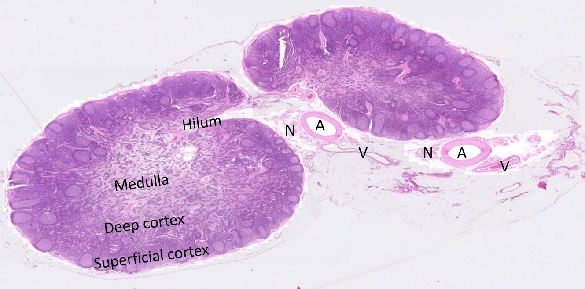
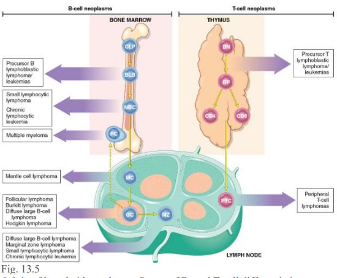
The classification has changed repeatedly since the original Rappaport classification of 1976. We are currently on the World Health Organization 5th edition (2022), with plans for an integrated WHO and International Consensus Classification. The history is interesting rather than testable — base everything on the WHO.
Alongside the classification, the ancillary studies improved dramatically:
Why more colors matter: more colors means more antibodies in a single tube, so you can characterize one population of interest in one tube instead of several — more efficient, and a better characterization because every marker is measured on the same cells.
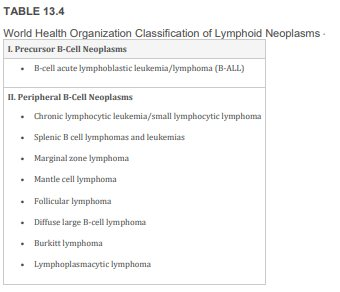
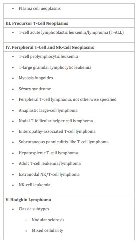
Everything in categories 1–4 is “non-Hodgkin lymphoma.”
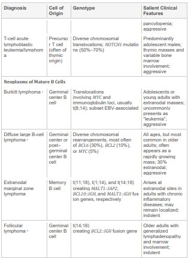
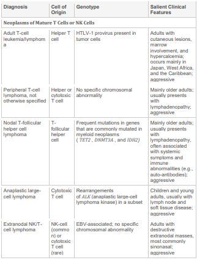
| # | Morphologic pattern at low power | What to think of first |
|---|---|---|
| 1 | Small lymphocytes — architecture effaced by a proliferation of small mature lymphocytes | CLL/SLL; also marginal zone lymphoma, mantle cell lymphoma |
| 2 | Follicles — a nodular-looking process at low power | Follicular lymphoma; benign lymphoid hyperplasia — separated by immunostains |
| 3 | Follicles plus some diffuse areas | Follicular lymphoma, marginal zone lymphoma, angioimmunoblastic T-cell lymphoma, reactive processes |
| 4 | Mixed small and large cells, no discernible pattern | T-cell lymphoma; T-cell/histiocyte-rich large B-cell lymphoma; EBV-positive lymphoid proliferations |
| 5 | Mixed small and large cells with localized large cells | Partial large cell transformation of a low-grade lymphoma |
| 6 | Sinus pattern | Metastatic lesions, sinus histiocytosis, anaplastic large cell lymphoma |
| 7 | Polymorphous with scattered large cells | Hodgkin lymphoma; EBV-positive lymphoproliferative disorders |
| 8 | Clusters / aggregates of large cells | High-grade follicular lymphoma |
| 9 | Diffuse sheets of large cells | Diffuse large B-cell lymphoma |
| 10 | Increased stromal elements | Angioimmunoblastic T-cell lymphoma; Kaposi sarcoma |
Q: A lymph node is effaced by a monotonous population of small mature lymphocytes with pale nodular areas scattered through it. What is the top differential, and what are the pale nodules?
CLL/SLL — the “small lymphocyte” pattern. The pale nodules are proliferation centers (pseudofollicles) containing prolymphocytes and paraimmunoblasts: larger, more activated cells with more open chromatin and distinct nucleoli. They are a characteristic feature of CLL/SLL and should not be mistaken for reactive germinal centers — true germinal centers sit at the periphery in a preserved node, whereas here the architecture is effaced.
Q: Why does the phrase “polymorphous background with scattered large cells” point to Hodgkin lymphoma rather than to a large cell lymphoma?
Because in classic Hodgkin lymphoma the neoplastic cells are a tiny minority — Reed–Sternberg and Hodgkin cells represent less than 10% of all cells, often only 1–2%. What fills the node is a reactive polymorphous infiltrate: small lymphocytes, histiocytes, plasma cells, neutrophils, eosinophils and fibroblasts. In diffuse large B-cell lymphoma, by contrast, the large cells are the tissue — you see sheets of them. Scattered versus sheets is the discrimination.
How lymphomas get started
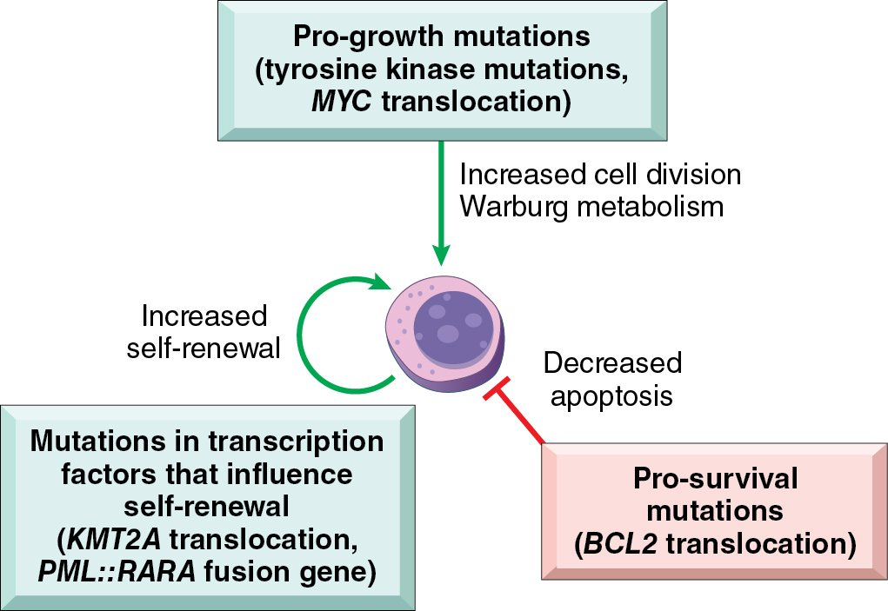
These are the proto-oncogenes. Tyrosine kinase mutations and MYC translocation. Effect: increased cell division and Warburg metabolism.
KMT2A translocation, PML::RARA fusion gene. These are discussed further in the hematopoiesis lecture. Effect: increased self-renewal.
BCL2 translocation is the paradigm. Effect: decreased apoptosis. This is the mechanism of follicular lymphoma.
Proto-oncogenes are often activated in lymphoid cells by errors that occur during attempted antigen receptor gene diversification — and potentially oncogenic mutations occur most frequently in germinal center B cells.
The reason: the germinal center B cell deliberately breaks and re-joins its own DNA during class switch recombination and somatic hypermutation (as the immature B cell does during VDJ recombination in the marrow). Mistakes during those controlled breaks can splice an oncogene next to the transcriptionally hyperactive immunoglobulin locus, which then drives it permanently. MYC is the classic example — activated by translocation to the immunoglobulin locus.
| Virus | Full name | Associated neoplasm |
|---|---|---|
| HTLV-1 | Human T-lymphotropic virus 1 | Adult T-cell leukemia/lymphoma |
| HHV-8 | Human herpesvirus 8 | Primary effusion lymphoma (also multicentric Castleman disease, Kaposi sarcoma) |
| EBV | Epstein–Barr virus | Classic Hodgkin lymphoma, endemic Burkitt lymphoma, EBV-positive diffuse large B-cell lymphoma, and others |
| Chronic inflammatory driver | Resulting lymphoma |
|---|---|
| Helicobacter pylori | Gastric extranodal marginal zone (MALT) lymphoma — which can regress with eradication therapy |
| Celiac disease | Enteropathy-associated T-cell lymphoma |
| Breast implants | Breast implant-associated anaplastic large cell lymphoma |
Smoking is a further source of increased mutation burden and is linked to an increased incidence of acute myeloid leukemia.
Q: A patient with long-standing Helicobacter pylori gastritis develops a low-grade B-cell lymphoma of the stomach. Why might antibiotics alone cure this lymphoma, when antibiotics obviously do not cure lymphoma in general?
Because in gastric extranodal marginal zone (MALT) lymphoma the neoplastic clone remains, at least early on, dependent on chronic antigenic stimulation from the organism. Remove the antigen and the growth stimulus is removed: these tumors respond remarkably well to H. pylori-directed therapy. It is the clearest clinical demonstration of the “chronic inflammation drives lymphomagenesis” principle. The same logic applies to celiac disease and enteropathy-associated T-cell lymphoma and to breast implants and anaplastic large cell lymphoma.
Q: Why are germinal center B cells — not marrow precursors, not plasma cells — the commonest site of oncogenic translocation?
Because germinal center B cells are doing deliberate, programmed DNA breakage and re-ligation: class switch recombination and somatic hypermutation. Errors during those processes can join a proto-oncogene to the transcriptionally active immunoglobulin heavy chain locus on chromosome 14, which drives it constitutively. This one mechanism produces t(14;18) BCL2 in follicular lymphoma, t(8;14) MYC in Burkitt lymphoma, and t(11;14) cyclin D1 in mantle cell lymphoma.
Clinical discrimination
Dr. Sirotnikov calls this “one of the more important take-home points.” Before any tissue exists, the distribution of disease already separates the two families — and question stems are written around exactly these four contrasts.
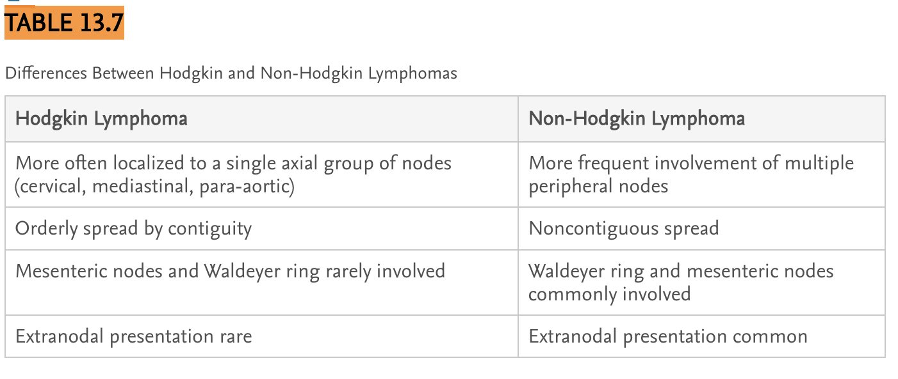
| Feature | Hodgkin lymphoma | Non-Hodgkin lymphoma |
|---|---|---|
| Nodal distribution | Localized to a single axial group — cervical, mediastinal, para-aortic. The left supraclavicular node is a frequent site | Multiple peripheral nodes |
| Pattern of spread | Orderly spread by contiguity — from one node group to the next adjacent one | Noncontiguous spread |
| Mesenteric nodes and Waldeyer ring | Rarely involved | Commonly involved |
| Extranodal presentation | Rare | Common |
Because Hodgkin lymphoma spreads to adjacent node groups in order, the pattern of involvement is predictable. Dr. Sirotnikov walks it explicitly:
Q: A patient has biopsy-proven lymphoma involving abdominal para-aortic nodes and the spleen, with no cervical or mediastinal disease anywhere on imaging. Does this favor Hodgkin or non-Hodgkin lymphoma, and why?
Strongly favors non-Hodgkin lymphoma. Hodgkin lymphoma spreads contiguously in an orderly fashion, and abdominal nodes are not affected unless cervical or mediastinal nodes are involved first. Skipping straight to the abdomen is noncontiguous spread, which is characteristic of non-Hodgkin lymphoma. The involvement of mesenteric nodes or Waldeyer ring, or any extranodal presentation, would push the same way.
The disease defined by a cell that is barely there
Reed–Sternberg and Hodgkin cells are typically NOT the predominant component. They represent less than 10% of all cells in an involved node — typically closer to 1–2%. The bulk of the tissue is a reactive infiltrate: lymphocytes, histiocytes, plasma cells, neutrophils, eosinophils and fibroblasts. This is why the low-power pattern is “polymorphous with scattered large cells,” and why finding the diagnostic cell can take real searching.
| Cell | What it looks like |
|---|---|
| Reed–Sternberg cell | Binucleated, with really prominent cherry-red macronucleoli and a perinuclear halo. The classic “owl eye” cell |
| Hodgkin cell | The same cell but with a single nucleus (mononucleated or monolobated) |
| Lacunar cell | A Reed–Sternberg or Hodgkin cell with retraction artifact producing a clear space (lacuna) around it. Characteristic of nodular sclerosis |
| Mummified cell | A degenerate, shrunken, densely eosinophilic variant |
| Multinucleated / wreath-like variant | Can mimic anaplastic large cell lymphoma |
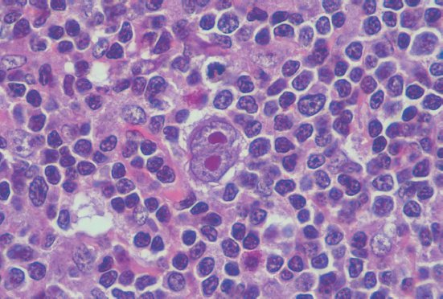
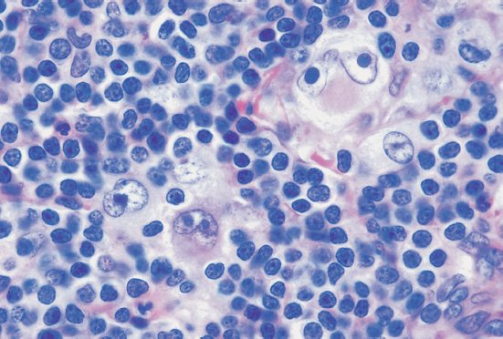
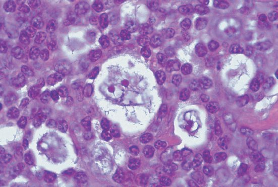
If anyone asks: Reed–Sternberg and Hodgkin cells are of B-cell lineage — but they have a defective B-cell program. This happens through expression of B-cell repressors and silencing of B-cell differentiation genes. The result is weaker or absent expression of B-cell markers, and that loss is exactly what the immunostain panel is designed to detect.
The marker-numbering shortcut Dr. Sirotnikov gives: CD numbers in the low teens and below (CD2, 3, 4, 5, 7, 8) → think T cell. CD numbers in the twenties (CD19, CD20, CD22, CD79a) → think B cell.
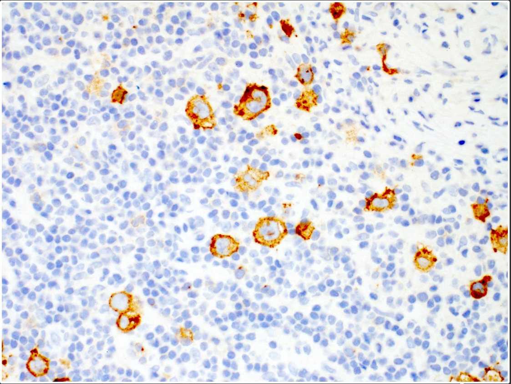
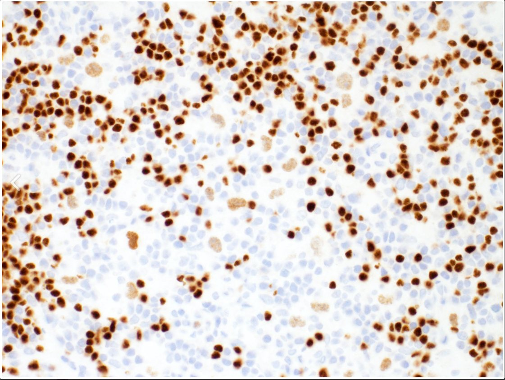
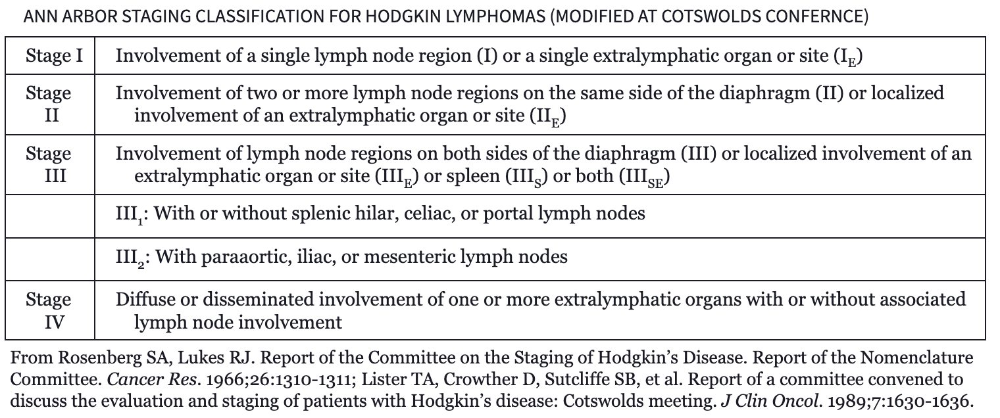
| Stage | Definition |
|---|---|
| I | A single lymph node region (or a single extralymphatic organ or site) |
| II | Two or more lymph node regions on the SAME side of the diaphragm |
| III | Both sides of the diaphragm, or localized involvement of an extralymphatic organ or site, or the spleen, or both |
| III1 | With or without splenic hilar, celiac or portal nodes |
| III2 | With para-aortic, iliac or mesenteric nodes |
| IV | Diffuse or disseminated involvement of one or more extralymphatic organs |
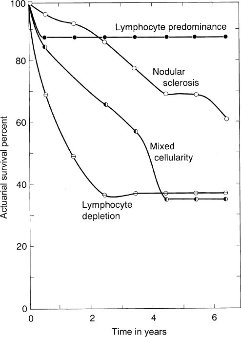
Q: A lymph node contains scattered large binucleate cells with cherry-red nucleoli in a polymorphous background rich in eosinophils. The large cells are CD30 positive, CD15 positive, PAX5 weakly positive, CD20 negative, OCT2 negative, CD45 negative, ALK negative. What is the diagnosis, and what does each of the last two negatives rule out?
Classic Hodgkin lymphoma. The profile is complete: CD30 strong, CD15 co-expressed, PAX5 weak (versus dark background B cells), pan-B-cell markers lost, OCT2 negative. CD45 negativity — CD45 is a pan-hematopoietic marker — helps separate classic Hodgkin lymphoma from nodular lymphocyte predominant Hodgkin lymphoma and non-Hodgkin B-cell lymphomas, which retain it. ALK negativity excludes ALK-positive anaplastic large cell lymphoma, which is the other major CD30-positive lymphoma.
Q: Why is PAX5 more useful than CD20 for confirming classic Hodgkin lymphoma, even though both are B-cell markers?
Because PAX5 gives you a graded, comparative result rather than a binary one. In classic Hodgkin lymphoma PAX5 is weak but present, and the background small B cells in the same section stain strongly — so a single slide carries its own internal control, and the weakness itself is the positive finding. CD20 is simply negative, which is less informative because many things are CD20 negative. Dr. Sirotnikov calls the PAX5 comparison “probably your most helpful clue” and stresses that the background B cells are always something to look for.
Q: Brentuximab vedotin is used in relapsed classic Hodgkin lymphoma. What is its target, and what other lymphoma in this lecture would you also expect it to work in?
Brentuximab is an anti-CD30 agent. The other CD30-positive lymphoma in this lecture is anaplastic large cell lymphoma, which is defined by diffuse CD30 expression. This is a good illustration of why the diagnostic marker and the therapeutic target are so often the same molecule. The alternative relapse option, nivolumab, is a checkpoint inhibitor and works by a completely different mechanism.
Four faces of one disease
All four share the same neoplastic cell and the same immunophenotype. What differs is who gets it, how much background inflammation there is, how many Reed–Sternberg cells you see, and whether there is fibrosis — and those four variables map cleanly onto prognosis.
| Subtype | Demographics | Stage at presentation | Reed–Sternberg cells | Background | Fibrosis | Prognosis |
|---|---|---|---|---|---|---|
| Nodular sclerosis | Females and males 1:1 (the subtype most likely to occur in females); young adults | Early — stage I or II | Variants predominate; numerous lacunar cells | Many background cells, polymorphous, numerous eosinophils | Broad bands of collagen | Excellent |
| Lymphocyte-rich | — | Usually early | Present, often rosetted by small lymphocytes | Predominantly small lymphocytes — the polymorphous mixture is largely lost | No | Good |
| Mixed cellularity | Males, elderly (also seen in the pediatric population) | High stage | Many typical Reed–Sternberg cells | Fewer reactive cells but a mixture of eosinophils, plasma cells and lymphocytes | No bands of fibrosis — the key separation from nodular sclerosis | Aggressive |
| Lymphocyte-depleted | Males, elderly, associated with HIV | Usually disseminated | Many | Rare background inflammatory cells | Fibrosis present | Very aggressive — poor |
The nodularity comes from broad bands of collagen separating the node into discrete nodules, with the polymorphous background and large cells embedded inside them.
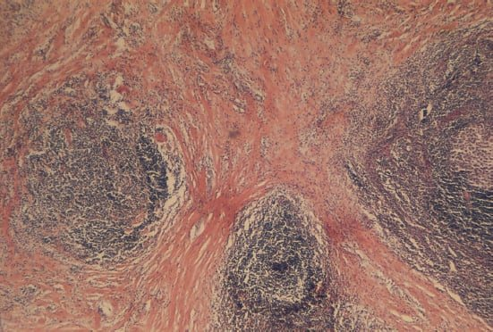
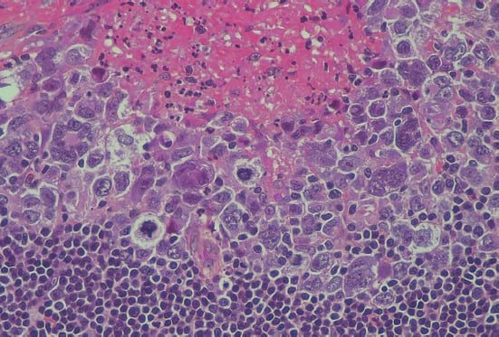
When there is a predominance of Hodgkin/Reed–Sternberg cells and variants forming a cohesive-looking group of neoplastic cells, this is called the syncytial variant of nodular sclerosis. It matters because the cohesive appearance can mimic a carcinoma or anaplastic large cell lymphoma. The multinucleated, wreath-like cells seen here can also be reminiscent of anaplastic large cell lymphoma — which is why an ALK stain is done to rule that out whenever Hodgkin lymphoma is being considered.
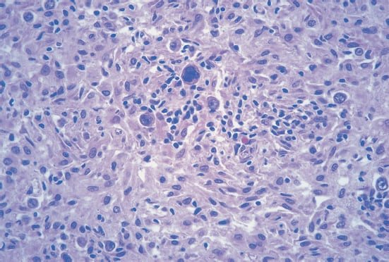
The atypical cells here stand out because they are more hyperchromatic (darker) than the background cells — a useful searching strategy in this subtype, where the usual polymorphous background is missing.
The distinction from nodular sclerosis can be tricky because the background is similar — but there are no bands of fibrosis. Architecture is distorted to effaced, and the pattern of involvement is often pericortical / interfollicular expansion with preserved reactive follicles, which looks pale-pink between the follicles at low power.
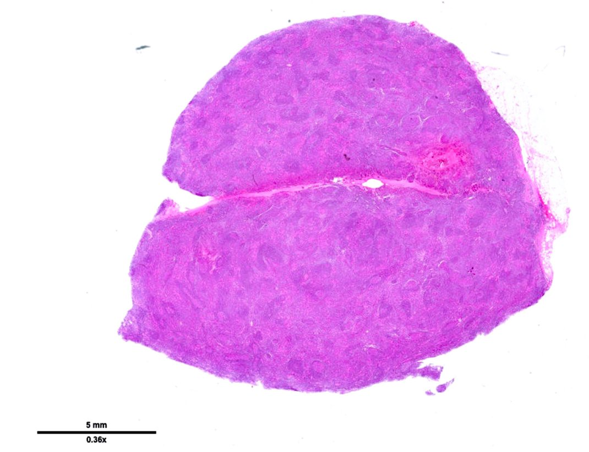
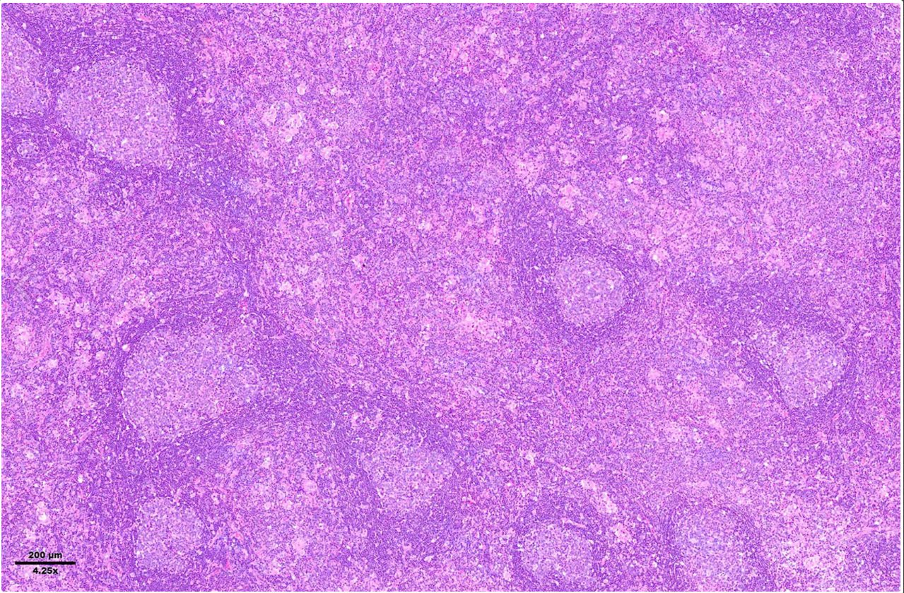
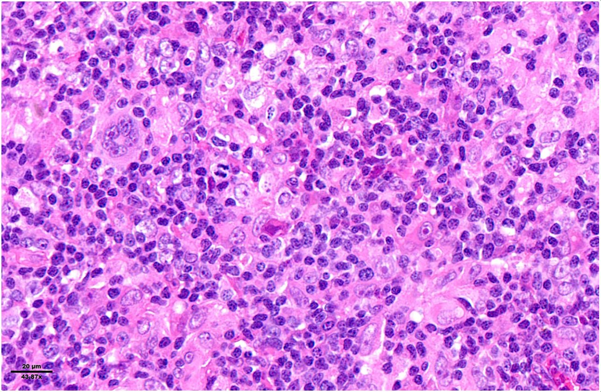
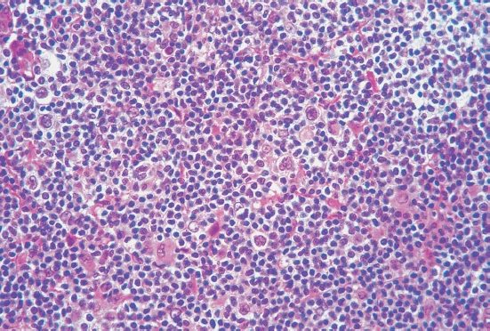
Nodular lymphocyte predominant Hodgkin lymphoma — because both show large atypical cells rosetted by small lymphocytes on a lymphocyte-rich background. The distinction is made entirely by immunophenotype, and it is set out in the next section. Note also that in lymphocyte-rich cases you may see either OCT2 or BOB1 expressed, but not both.
Q: A 24-year-old woman has a mediastinal mass and cervical adenopathy. The node is divided into nodules by thick collagen bands; within them are numerous large cells sitting in clear spaces, in a background rich in eosinophils. Subtype, stage expectation, and prognosis?
Nodular sclerosis classic Hodgkin lymphoma. The broad bands of collagen and lacunar cells (large cells in clear spaces from retraction artifact) are diagnostic of the subtype. It is the subtype most likely to occur in females, typically in young adults, usually presents at early stage (I or II), is the subtype most associated with mediastinal lymphadenopathy, and has an excellent prognosis.
Q: How do you separate mixed cellularity from nodular sclerosis when both show a polymorphous eosinophil-rich background with Reed–Sternberg cells?
Fibrosis. Nodular sclerosis has broad bands of collagen dividing the node into nodules; mixed cellularity does not. Supporting differences: nodular sclerosis occurs in young adults, equally in both sexes, at early stage, with an excellent prognosis and numerous lacunar cells; mixed cellularity occurs in elderly males (and children), presents at high stage, is aggressive, and shows many typical Reed–Sternberg cells with an interfollicular pattern that preserves reactive follicles.
Q: An elderly HIV-positive man has disseminated lymphoma. The node shows a fibroblast-rich background with few lymphocytes and numerous large, dark, atypical cells. Subtype and prognosis?
Lymphocyte-depleted classic Hodgkin lymphoma. The demographic (elderly male, HIV positive), the disseminated presentation, the rare background inflammatory cells with numerous Reed–Sternberg cells, and the fibrosis all fit. It is very aggressive with a poor prognosis — the worst of the four subtypes on the survival curves. It is also the subtype most strongly associated with Epstein–Barr virus.
The Hodgkin lymphoma that is proud of being a B cell
Now increasingly called nodular lymphocyte predominant B-cell lymphoma, and the name change tells you the whole story: unlike classic Hodgkin lymphoma, this one retains its B-cell program completely. One of the more common lymphomas encountered in pediatric practice.
Refer back to the pattern-based approach: think follicles / nodular pattern. The architecture is completely effaced by a nodular proliferation of variably sized nodules — more disorganized than the crisp, small, regular follicles of a background reactive node.
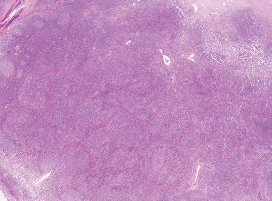
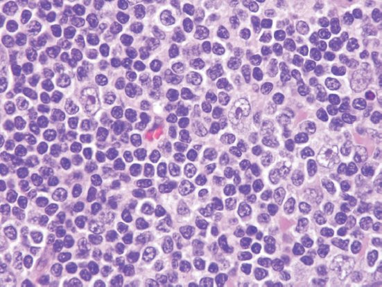
Nodular lymphocyte predominant Hodgkin lymphoma is defined by popcorn cells (also called LP or L&H cells): complex-looking, almost multilobated large cells with vesicular chromatin — vesicular meaning the chromatin is cleared out, giving a pale look — and an irregular macronucleolus. Contrast this with the Reed–Sternberg cell’s well-rounded, cherry-red macronucleolus.
The distinction can be genuinely tricky, so take the whole picture into account: architecture, pattern, background, and above all immunophenotype.
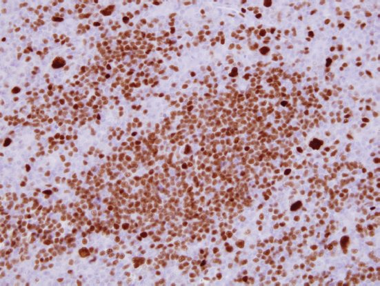
| Feature | Nodular lymphocyte predominant | Classic Hodgkin lymphoma |
|---|---|---|
| Diagnostic cell | Popcorn cell — multilobated, vesicular chromatin, irregular nucleolus | Reed–Sternberg cell — binucleate, well-rounded cherry-red macronucleolus, perinuclear halo |
| CD30 | Negative | Strong, uniform, Golgi accentuation |
| CD15 | Negative | Positive in ~75% |
| CD20 / CD22 / CD79a | POSITIVE | Negative |
| PAX5 | Strong | Weak vs background B cells |
| OCT2 / BOB1 | Both POSITIVE | Negative (one but not both in lymphocyte-rich cases) |
| CD45 | Positive (80–90%) | Negative |
| EMA | Positive (40–50%) | Negative |
| Rosetting cells | CD4+ CD57+ PD-1+ T-follicular helper cells | Mixed reactive infiltrate, eosinophil-rich |
| B symptoms | Uncommon | Common |
| Course | Indolent, >80% ten-year survival, but multiple recurrences | Curable in 80–95% depending on stage |
Q: A 38-year-old man has an isolated enlarged cervical node and no B symptoms. The node is effaced by vague nodules containing large multilobated cells with pale chromatin, rosetted by small lymphocytes. The large cells are CD20 positive, OCT2 and BOB1 positive, CD45 positive, CD30 and CD15 negative. Diagnosis, and what are the rosetting cells?
Nodular lymphocyte predominant Hodgkin lymphoma (nodular lymphocyte predominant B-cell lymphoma). The large cells are popcorn cells. The full retained B-cell program (CD20 +, OCT2 +, BOB1 +, CD45 +) with CD30 and CD15 negative is the mirror image of classic Hodgkin lymphoma. The rosetting cells are T-follicular helper cells: CD4 positive, CD57 positive, PD-1 positive. The absence of B symptoms and the localized cervical presentation in a 30–50-year-old man (M:F 3:1) both fit.
Q: Why is R-CHOP a rational choice for advanced nodular lymphocyte predominant Hodgkin lymphoma, when it is a diffuse large B-cell lymphoma regimen?
Because the R in R-CHOP is rituximab, an anti-CD20 antibody — and unlike classic Hodgkin lymphoma, the popcorn cells of nodular lymphocyte predominant disease are strongly CD20 positive. The neoplasm has retained its full B-cell program, so a B-cell-directed regimen has a target. This is precisely why the entity has been renamed nodular lymphocyte predominant B-cell lymphoma. Classic Hodgkin lymphoma, being CD20 negative, would not respond to rituximab — it is targeted instead with anti-CD30 brentuximab.
CD5 positive · CD10 negative
CLL (chronic lymphocytic leukemia) is the peripheral blood and bone marrow counterpart; SLL (small lymphocytic lymphoma) is the lymph node counterpart. For all intents and purposes CLL/SLL is the same disease process. Remember the naming rule: “-oma” means mass, so the lymphoma name is the one that involves nodes.
Mature B-cell lymphomas that aberrantly express this T-cell marker.
Germinal center origin. Usually BCL6 positive too.
Post-germinal-center and marginal zone derived.
Both are CD5 positive, CD10 negative mature B-cell lymphomas. CLL/SLL is CD23 POSITIVE; mantle cell lymphoma is CD23 NEGATIVE (and carries t(11;14) with cyclin D1 overexpression). If a stem gives you a CD5-positive B-cell lymphoma, CD23 is the next thing to look for.
Richter transformation is progression of CLL/SLL to diffuse large B-cell lymphoma. Patients develop a rapidly enlarging mass within a lymph node or the spleen. It is driven by newly acquired mutations in TP53 or MYC.
Prognosis depends on stage, the presence of B symptoms, the pattern of bone marrow involvement, the immunophenotype, karyotype/FISH, and gene mutations. The commonest genetic abnormalities are deletions of 13q14.3, 11q, and 17p (TP53), and trisomy 12q.
TP53 (on 17p) is always associated with a poor prognosis — in CLL, in acute myeloid leukemia, everywhere. Dr. Sirotnikov: “It’s always bad.”
Low stage disease with no adverse prognostic indicators is managed with watchful waiting — treatment is not automatic.
“Small” and “large” are meaningless in isolation. Always find an internal reference in the same image: in the peripheral blood, compare with a red blood cell; in a lymph node, compare with the background small lymphocytes or an endothelial cell. This single habit answers many image-based questions.
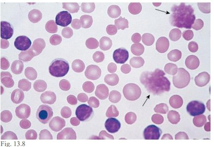
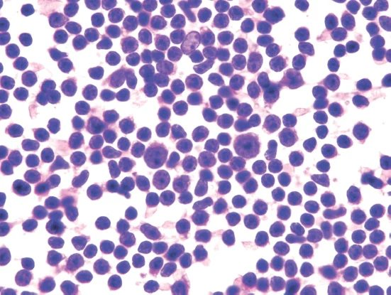
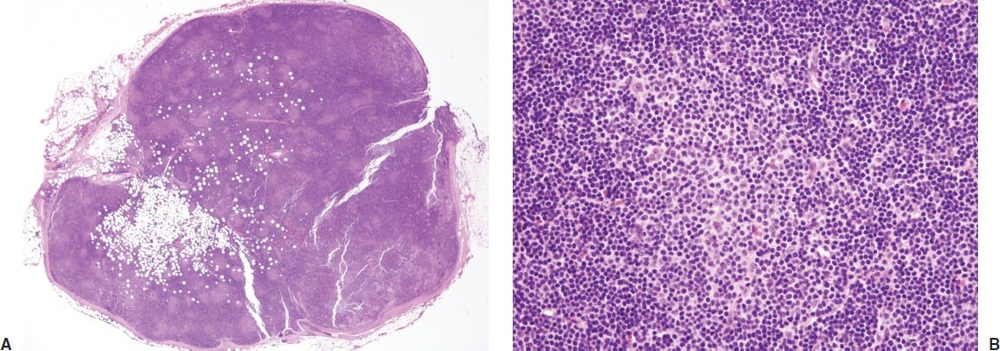
The pale nodules at low power are proliferation centers, containing:
But the bulk of the cellularity is still the small CLL cells. Do not mistake proliferation centers for reactive germinal centers — the surrounding architecture is effaced, and there are no tingible body macrophages or mantle zones.
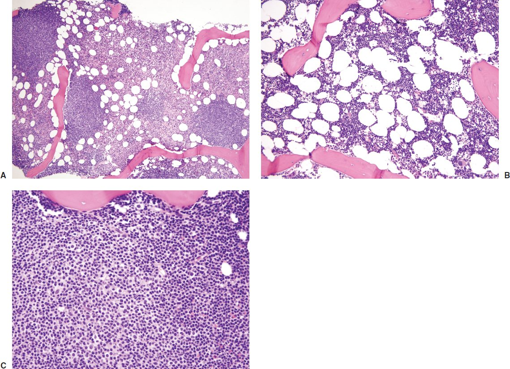
| Marrow pattern | Appearance | Note |
|---|---|---|
| Nodular / paratrabecular | Aggregates alongside the bony trabeculae | Mimics follicular lymphoma, in which a paratrabecular pattern is characteristic |
| Interstitial | Darker lymphoid areas scattered between normal marrow elements | Normal hematopoiesis still visible in between |
| Diffuse | Normal marrow architecture completely effaced — no background maturation at all, just lymphocytes | Pale central areas are pseudofollicle proliferation centers |
Q: A 68-year-old is found to have a lymphocyte count of 40,000/µL. The smear shows monotonous small lymphocytes with clumped chromatin and numerous smudge cells. Flow shows CD5 +, CD19 +, CD20 +, CD23 +, CD10 −, with dim surface light chain. Diagnosis, and what single further marker would you check to exclude the main alternative?
Chronic lymphocytic leukemia. Smudge cells and clumped “soccer ball” chromatin in monotonous small lymphocytes plus a CD5-positive, CD10-negative B-cell phenotype makes it. The main alternative in the CD5-positive group is mantle cell lymphoma, and the discriminator is CD23: CLL is CD23 POSITIVE, mantle cell is CD23 NEGATIVE. (Confirmation would be cyclin D1 / t(11;14) for mantle cell.) Dim surface light chain expression also favors CLL.
Q: A patient with stable CLL for six years suddenly develops a rapidly enlarging cervical mass, fever and a rising LDH. What has happened, what will the biopsy show, and which two mutations drive it?
Richter transformation — progression of CLL/SLL to diffuse large B-cell lymphoma. The biopsy will show sheets of large cells replacing the previous small lymphocytic population. It is driven by newly acquired mutations in TP53 or MYC. The clinical signature is the rapidly enlarging mass in a lymph node or spleen in a patient with previously indolent disease.
CD10 positive · germinal center origin
Normal germinal center B cells are BCL2 NEGATIVE. BCL2 is anti-apoptotic, and the germinal center exists to run somatic hypermutation and then eliminate the defective cells — so the cells must be easy to kill. Switching BCL2 off is how that is arranged.
Follicular lymphoma is defined by BCL2 EXPRESSION, and that is how you distinguish it from follicular hyperplasia. CD10 and BCL6 positivity confirm germinal center origin.
t(14;18): IgH (immunoglobulin heavy chain, chromosome 14) :: BCL2 (chromosome 18).
The translocation puts BCL2 under the control of the transcriptionally hyperactive immunoglobulin heavy chain promoter, which forces it on. Anti-apoptosis is restored, and the germinal-center-origin cells accumulate because they cannot die. Once you remember that follicular lymphoma is BCL2 positive, the translocation and the mechanism follow from each other.
Progression to diffuse large B-cell lymphoma occurs at a rate of 1–3% per year, with a median time to progression of 2.5–4.1 years. In practice, adults with follicular lymphoma who develop a PET-avid site get an excision or biopsy specifically to look for transformation.
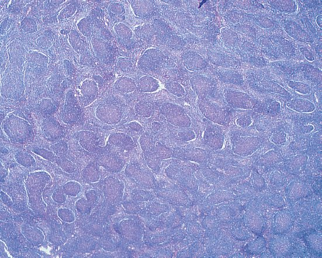
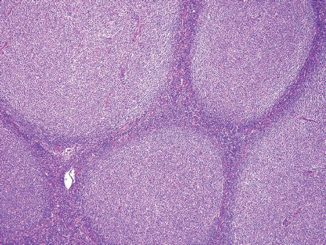
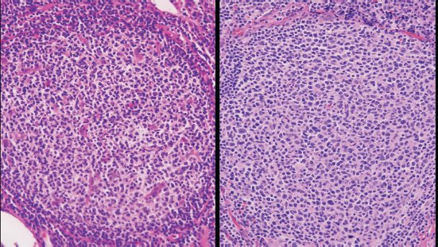
After proving follicular lymphoma with stains and molecular studies, it must be graded based on the proportion of centrocytes to centroblasts:
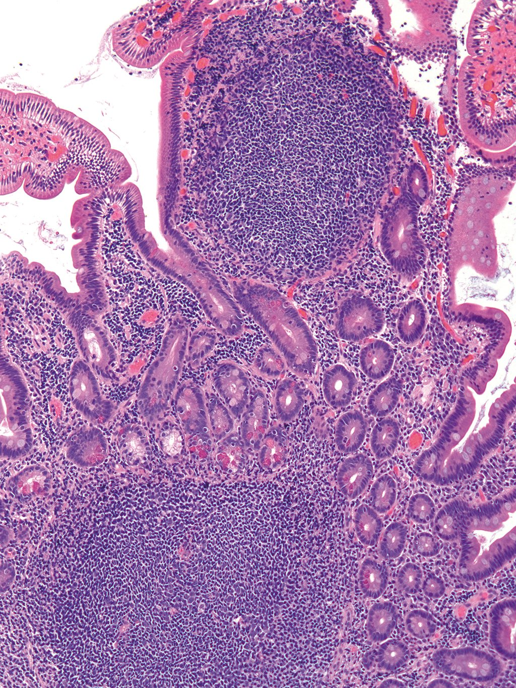
A distinct variant: it presents clinically as duodenal polyps — polypoid lesions found at esophagogastroduodenoscopy. Histologically, normal villi sit alongside villi expanded by nodules of atypical B cells, and it carries the same t(14;18) rearrangement.
Q: A 64-year-old with painless generalized lymphadenopathy has a node effaced by crowded, uniform, back-to-back follicles with no tingible body macrophages and attenuated mantle zones. Which single stain confirms the diagnosis, what result do you expect, and what is the translocation?
BCL2 — and it will be POSITIVE within the follicles, which is abnormal because normal germinal center B cells are BCL2 negative. Diagnosis: follicular lymphoma. Translocation: t(14;18), IgH::BCL2 — putting BCL2 on chromosome 18 under the immunoglobulin heavy chain promoter on chromosome 14. Supporting phenotype: CD10 positive, BCL6 positive (germinal center origin), CD5 negative.
Q: A bone marrow biopsy shows lymphoid aggregates tightly apposed to the bony trabeculae. Which lymphoma does this pattern classically suggest, and which other disease in this lecture can mimic it?
A paratrabecular pattern classically suggests follicular lymphoma, whose marrow is involved in 40–70% of cases. The mimic is CLL/SLL, which has a nodular/paratrabecular pattern among its three marrow patterns (nodular/paratrabecular, interstitial, diffuse). Immunophenotype resolves it: follicular lymphoma is CD10 +, BCL6 +, BCL2 +, CD5 −, whereas CLL/SLL is CD5 +, CD23 +, CD10 −.
Q: A patient with known follicular lymphoma has a single new PET-avid nodal site three years after diagnosis. What is being looked for on biopsy, and what is the annual rate?
Transformation to diffuse large B-cell lymphoma, which occurs at 1–3% per year with a median time to progression of 2.5–4.1 years. Morphologically this is the appearance of sheets of centroblast-like large cells replacing the follicular architecture — the end of the same grading continuum that separates low-grade from high-grade follicular lymphoma.
Sheets of large cells
Dr. Sirotnikov is explicit about the level of detail expected here: there are many subtypes, but “sheets of large cells” with a mature B-cell phenotype is the main takeaway. Know the morphology, the phenotype, and a handful of clinically flavored subtypes.
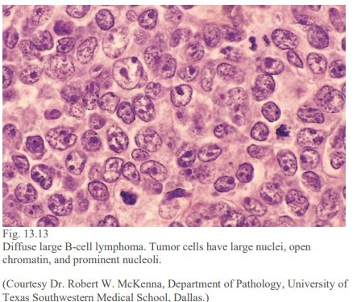
Presents as a malignant effusion without a mass. Associated with human herpesvirus 8, often in the setting of HIV.
The commonest example is primary central nervous system lymphoma. Also testis and vitreoretinal.
A recognized entity in its own right.
Arises in the thymus; seen more often in young adults and adolescents. A mediastinal mass in a young person that is not Hodgkin lymphoma or T-lymphoblastic lymphoma.
Several subtypes are defined by specific rearrangements — the reason every new diffuse large B-cell lymphoma gets molecular testing.
Q: A lymph node is replaced by sheets of cells two to three times the size of a small lymphocyte, with open chromatin and prominent nucleoli, CD19 and CD20 positive. What is the diagnosis, and what two indolent lymphomas in this lecture can give rise to it?
Diffuse large B-cell lymphoma. The two indolent lymphomas that transform into it are follicular lymphoma (transformation at 1–3% per year, median 2.5–4.1 years) and CLL/SLL (Richter transformation, driven by newly acquired TP53 or MYC mutations). In both cases the clinical signal is a rapidly enlarging, PET-avid mass in a patient with previously stable disease.
Q: A patient with HIV presents with a large malignant pleural effusion and no discrete mass. Cytology shows large atypical lymphoid cells. Which virus should be tested for, and what is the entity?
Human herpesvirus 8 (HHV-8), and the entity is primary effusion lymphoma, a subtype of large B-cell lymphoma that grows in body cavities as an effusion rather than as a mass. Note the other HHV-8 associations from this lecture and its companion: multicentric Castleman disease and Kaposi sarcoma.
CD5 negative · CD10 negative
MALT stands for mucosa-associated lymphoid tissue. These lymphomas arise in chronically inflamed tissue, and they sit on a continuum between reactive lymphoid hyperplasia and lymphoma — which is exactly why they are hard to diagnose and why so many ancillary studies get used.
| Organism | Site | Note |
|---|---|---|
| Helicobacter pylori | Stomach — the one to remember | Responds to eradication therapy |
| Campylobacter jejuni | Small intestine | |
| Borrelia burgdorferi | Cutaneous | |
| Chlamydia psittaci | Ocular (conjunctiva) | Rarely encountered |
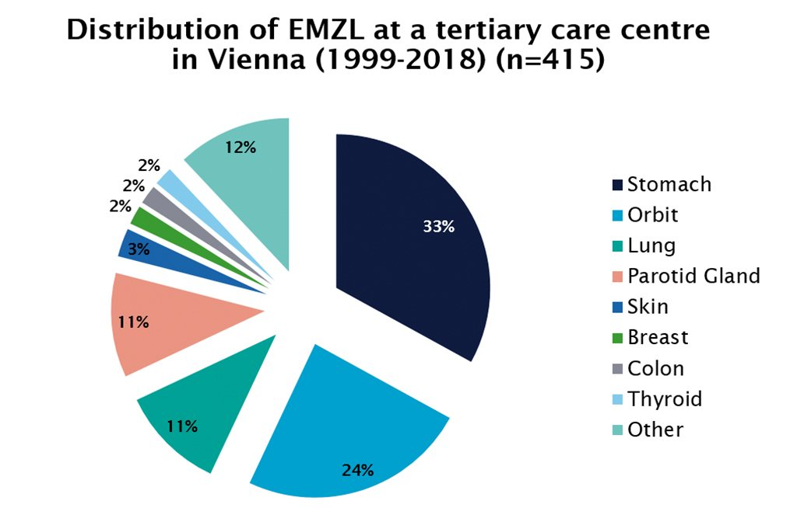
The marginal zone lies OUTSIDE the germinal center. BCL6 and CD10 are germinal center markers, so a marginal-zone-derived neoplasm should not express them. If you remember the anatomy of the follicle (germinal center → mantle zone → marginal zone), the phenotype follows.
CD21 and CD23 are follicular dendritic cell markers and are useful in a different way: they reveal expanded follicular dendritic cell meshworks left behind as the lymphoma colonizes and disrupts pre-existing follicles.
Because the entity sits on a spectrum from reactive lymphoid hyperplasia to lymphoma, the diagnosis frequently requires:
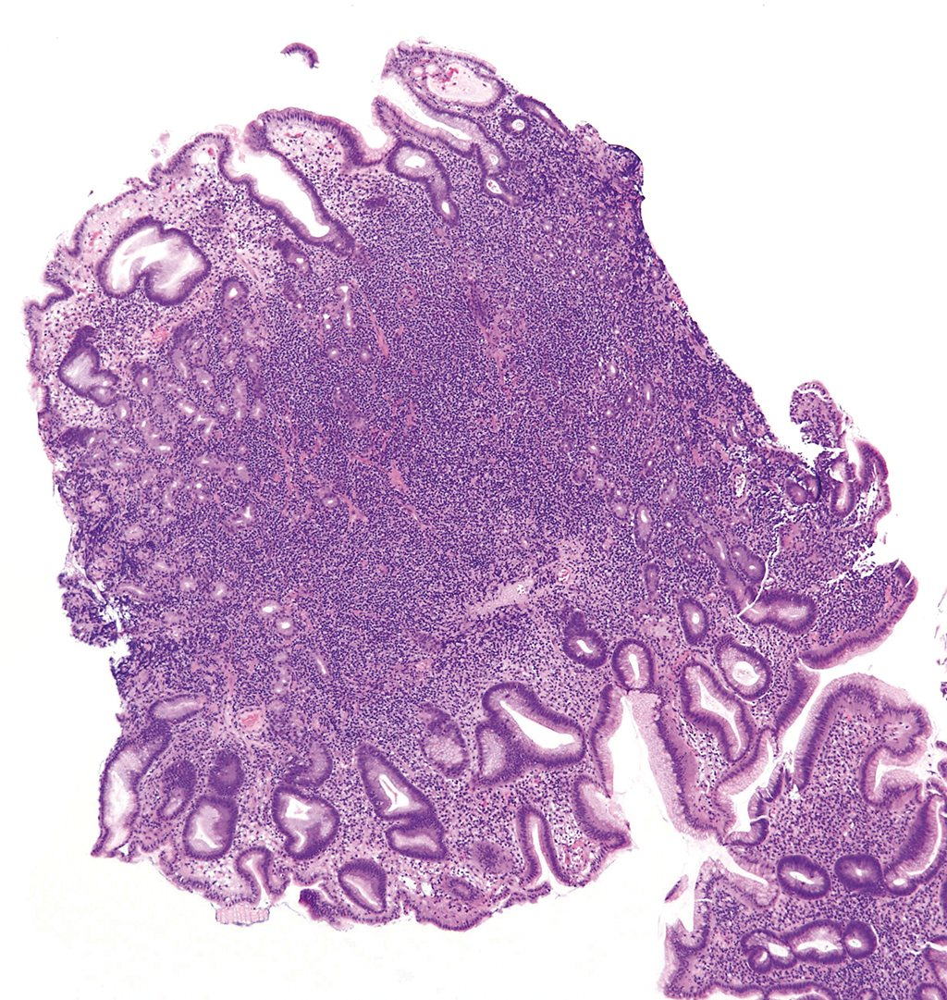
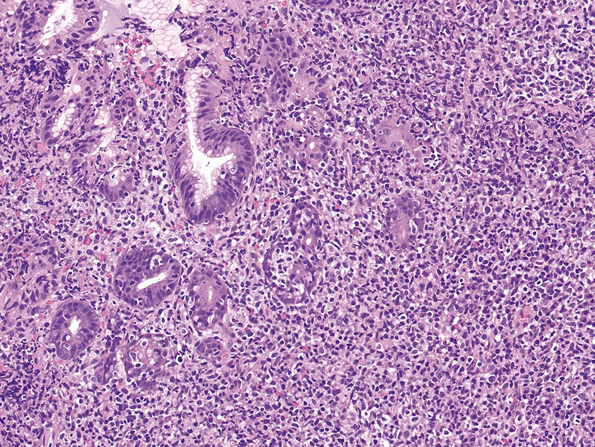
H. pylori-directed therapy alone can cure gastric MALT lymphoma — remove the antigenic drive and the clone regresses. Alternatively, B-cell-directed therapy: anti-CD20 with rituximab.
Q: A gastric biopsy shows sheets of small lymphoid cells with abundant pale cytoplasm invading and destroying the glands, admixed with plasma cells. Flow shows a CD20-positive B-cell population that is CD5, CD10 and BCL6 negative. Diagnosis, the two named morphologic features, and the first-line treatment?
Extranodal marginal zone (MALT) lymphoma of the stomach. The named features are monocytoid cells (abundant pale cytoplasm) and lymphoepithelial lesions (lymphoid invasion of glands). The CD5-negative, CD10-negative, BCL6-negative phenotype places it outside both the CD5 group (CLL, mantle cell) and the germinal center group (follicular, Burkitt) — consistent with a marginal zone, i.e. extra-germinal-center, origin. First-line treatment is Helicobacter pylori eradication; rituximab (anti-CD20) is the alternative.
CD10 positive · the fastest tumor in the lecture
| Subtype | Association | Classic presentation |
|---|---|---|
| Endemic | Epstein–Barr virus | A child with a large mass of the jaw — mandible or maxilla |
| Non-endemic (sporadic) | — | Abdomen — often nodules in the omental fat around a colon resection specimen. Can present with volvulus, because the mass creates an anchor point for the bowel to twist around. Also orbit soft tissue, Waldeyer ring, thyroid, ovary |
| Immunodeficiency-associated | HIV | Nodal involvement |
Both are CD10 positive, BCL6 positive, which places both in the germinal center. But:
Grow-fast versus die-slow. Two germinal center lymphomas with opposite mechanisms and opposite tempos.
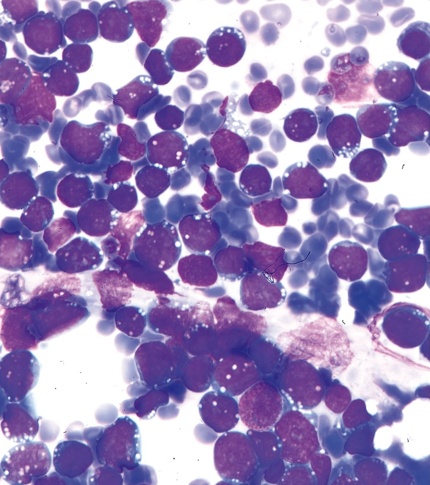
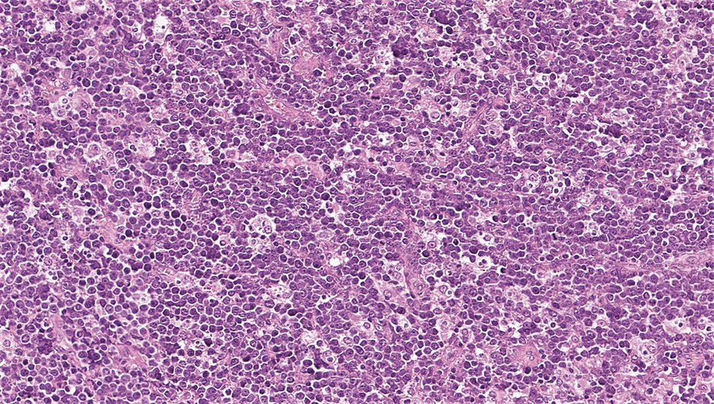
Q: A 7-year-old in Kenya presents with a rapidly growing jaw mass. Biopsy shows a diffuse sheet of monotonous medium-sized cells with numerous pale macrophages containing debris. Which subtype, which virus, which translocation, and what would Ki-67 show?
Endemic Burkitt lymphoma, associated with Epstein–Barr virus, with the defining translocation t(8;14) — IgH::MYC (MYC is on chromosome 8). The morphology described is the starry sky. Ki-67 would exceed 95% — essentially every cell cycling, which is why the macrophages have so much apoptotic debris to clear and why the tumor doubles so fast. Phenotype: CD10 +, BCL6 +, CD20 +, MYC +, BCL2 NEGATIVE.
Q: How do you distinguish Burkitt lymphoma from follicular lymphoma on immunostains alone, given that both are germinal-center-derived?
BCL2 and Ki-67. Both are CD10 positive and BCL6 positive, confirming germinal center origin. But follicular lymphoma is BCL2 POSITIVE with a relatively low proliferation index, while Burkitt lymphoma is BCL2 NEGATIVE with Ki-67 over 95%. The mechanisms are opposite: follicular lymphoma blocks apoptosis (t(14;18) BCL2); Burkitt lymphoma drives proliferation (t(8;14) MYC).
Q: An adult in the United States presents with a large abdominal mass and colonic volvulus. The resection shows omental nodules of sheets of medium-sized lymphoid cells. What subtype of Burkitt lymphoma is this, and why did the volvulus occur?
Non-endemic (sporadic) Burkitt lymphoma, whose commonest site in this setting is the abdomen, characteristically with nodules in the omental fat around a colon specimen. The volvulus occurs because the mass creates an anchor point around which the bowel twists. Remember the third subtype too: immunodeficiency-associated (HIV), which presents with nodal involvement.
CD5 negative · CD10 negative
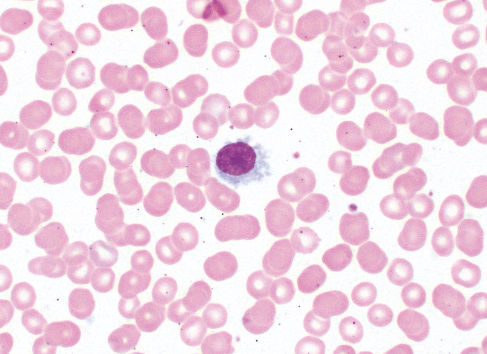
CD11c, CD25, CD103 and annexin A1 are the unique markers — the combination is essentially specific. (Note that CD11c is also expressed on monocytes.)
Q: A 56-year-old man has pancytopenia, splenomegaly, and a bone marrow aspirate that yields only blood with no spicules. The blood shows rare mononuclear cells with irregular cytoplasmic projections, and the monocyte count is very low. Diagnosis, why the aspirate failed, and which mutation is present in over 90%?
Hairy cell leukemia. The failed aspirate is the “dry tap,” caused by prominent marrow fibrosis induced by the infiltrating hairy cells — so you get a hemodilute sample instead of spicules. Monocytopenia is a characteristic and useful clue. Over 90% carry an activating MAP kinase pathway mutation — BRAF. Phenotype: CD5 negative, CD10 negative, with CD11c, CD25, CD103 and annexin A1 positive. Despite pancytopenia and splenomegaly the course is indolent.
Skin, then blood
Mycosis fungoides is the most common cutaneous T-cell lymphoma — over 50% of cases. Sézary syndrome is the leukemic (blood) counterpart. Mycosis fungoides is the skin; Sézary syndrome is the blood.
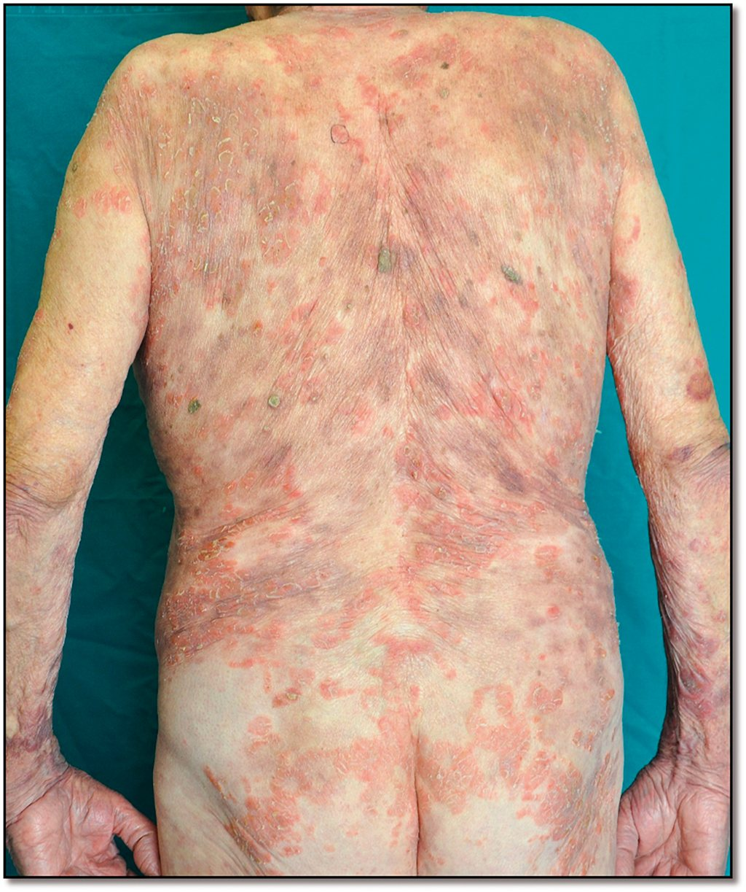
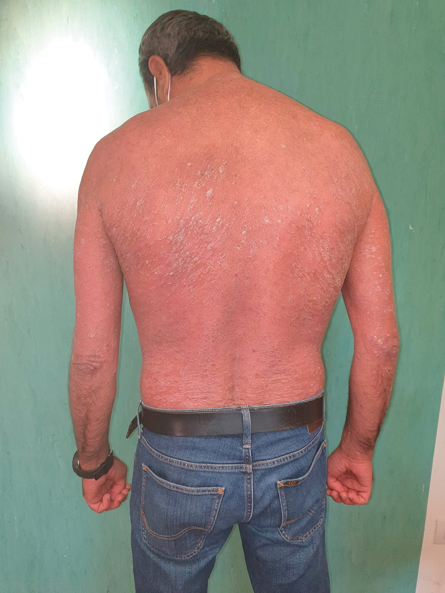
The phenotype is best described as a disrupted T-cell program: expression of, but sometimes loss of, the pan-T-cell markers CD2, CD3 and CD5. Typically CD4 positive and CD8 negative — CD4 is the helper T-cell marker; CD8 is the cytotoxic T-cell marker. CD7 is dim or partially lost, which while not specific is helpful in pointing toward involvement. Confirmation usually requires supportive studies proving T-cell clonality by PCR.
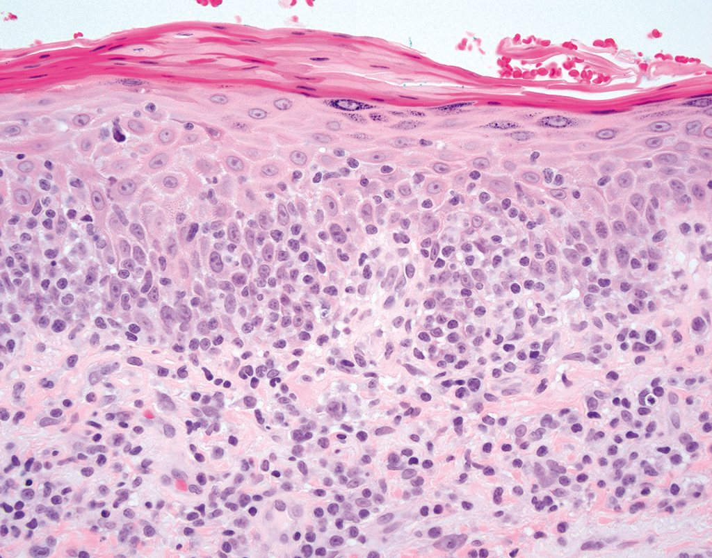
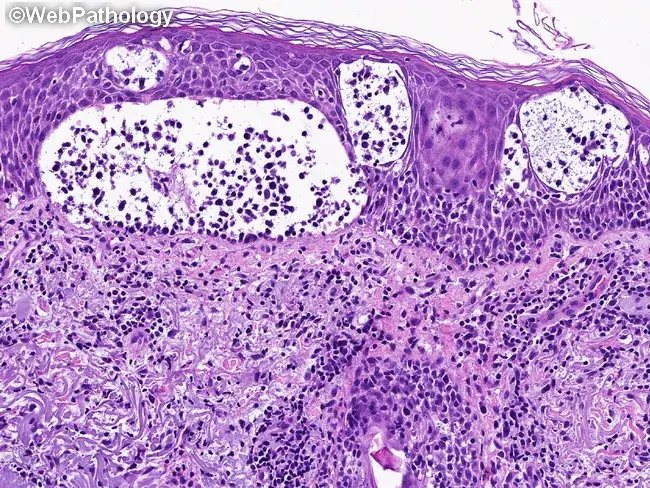
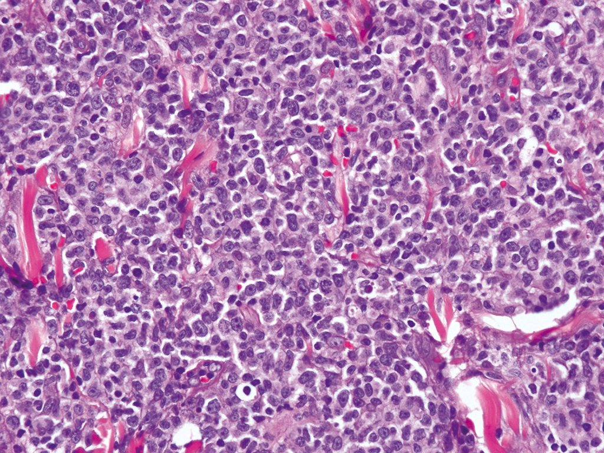
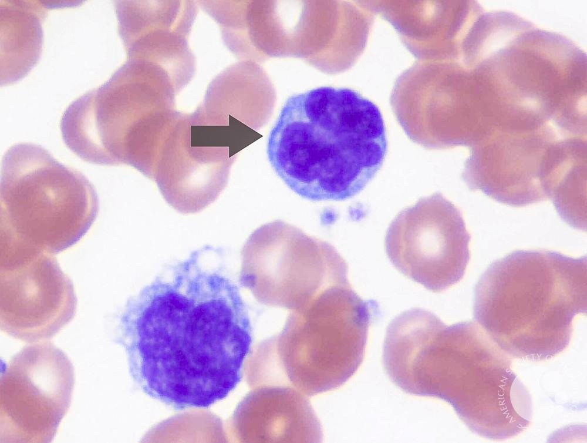
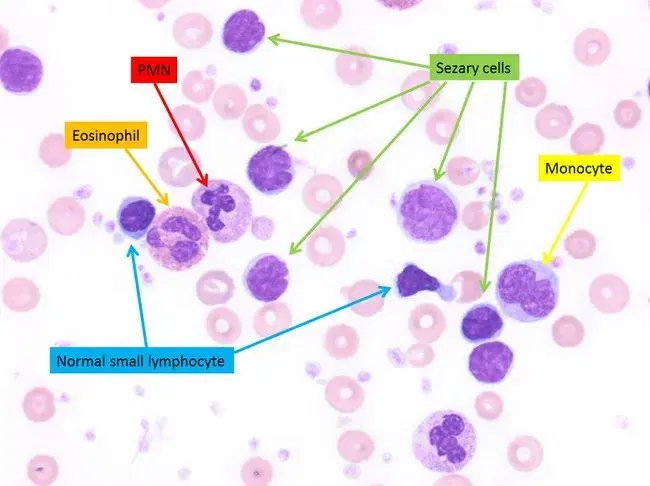
The labelled image is worth studying because it teaches size comparison:
In a patient with erythroderma, the diagnosis rests on:
Note: the presence of Sézary cells alone is not specific, so it must be correlated with the flow phenotype and the clinical picture.
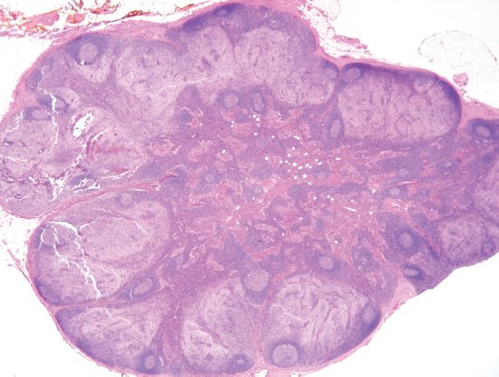
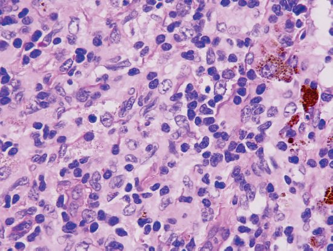
Patients with mycosis fungoides frequently develop dramatic dermatopathic lymphadenopathy — a reactive phenomenon in the node draining chronically inflamed skin. It is essential to distinguish this from true nodal involvement by mycosis fungoides, because that distinction changes the stage.
Recognize the reactive node by: architecture preserved but distorted, superficial cortex still showing reactive germinal centers, and paracortical expansion that is pale at low power because it is filled with histiocytes and dendritic cells (bland, pale chromatin, somewhat irregular nuclei, ample cytoplasm) plus increased pigment-laden macrophages. When such a node is received, flow cytometry and immunostains are performed to compare and contrast the phenotype and determine whether there is true involvement.
Q: A 58-year-old man has a 12-year history of scaly red plaques on his buttocks and groin. A skin biopsy shows small atypical lymphocytes with folded nuclei sitting in clear halos, some forming clusters within the epidermis. Diagnosis, name the two morphologic terms, and give the expected phenotype.
Mycosis fungoides. The terms are epidermotropism (atypical lymphocytes migrating into the epidermis) and Pautrier microabscesses (clusters of them within the upper epidermis). The nuclei are described as hyperchromatic and hyperconvoluted — cerebriform. Expected phenotype: CD2 +, CD3 +, CD5 +, CD4 +, CD8 negative, with CD7 dim or partially lost. The sun-protected “bathing trunk” distribution (axilla, groin, lower trunk, buttocks) and the indolent decade-long course both fit.
Q: The same patient develops total-body erythroderma. Blood shows 1,800 cells/µL with hyperconvoluted nuclei; flow shows an expanded CD4 population with a CD4:CD8 ratio of 18:1 and loss of CD7 and CD26. What has happened, and what one further test would you want?
Sézary syndrome — the leukemic phase. All three criteria are met: erythroderma, an absolute Sézary cell count above 1,000/µL, and flow showing an expanded CD4 population with a CD4:CD8 ratio greater than 10:1 plus loss of CD7 and CD26. The further test is T-cell receptor gene rearrangement, to demonstrate the SAME clone in the blood and in the skin — that is what cements the diagnosis, since Sézary cells alone are not specific.
Q: An axillary node is removed from a patient with mycosis fungoides. It shows preserved follicles with reactive germinal centers and a pale, expanded paracortex full of bland dendritic cells and pigment-laden macrophages. Is this nodal involvement? Why does the answer matter?
No — this is dermatopathic lymphadenopathy, a reactive response of the node draining chronically inflamed skin. The giveaways are preserved (though distorted) architecture, reactive germinal centers, and a paracortex expanded by histiocytes, dendritic cells and pigment-laden macrophages rather than by atypical lymphocytes. It matters because mycosis fungoides is staged by T/N/M/B — skin, node, viscera and blood — so calling a reactive node “involved” would upstage the patient incorrectly. Flow cytometry and immunostains are used to compare the node’s phenotype with the skin lesion.
Sinus / paracortical / vascular patterns
These cells can be so large and atypical that lymphoma is not the first thing you think of. When it grows in a sinusoidal pattern with cohesive-looking cells, it mimics melanoma or poorly differentiated carcinoma, especially in adults. It should be on your differential for any ugly, undifferentiated malignancy in a node, and Dr. Sirotnikov says he always does an ALK stain to rule it out when he is thinking Hodgkin lymphoma.
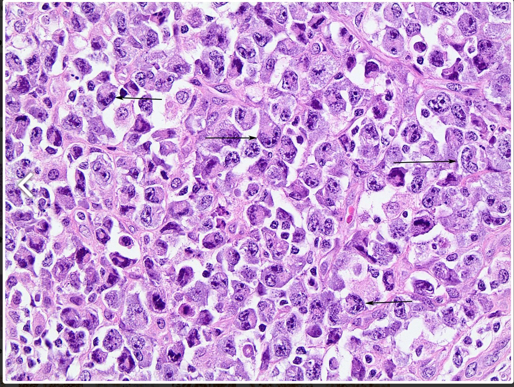
| Pattern | Mimic to consider |
|---|---|
| Sinusoidal | Metastatic carcinoma or melanoma — especially in adults |
| Paracortical | The normal T-cell zone; other peripheral T-cell lymphomas |
| Intravascular | Intravascular large B-cell lymphoma |
| Diffuse (and occasionally nodular with fibrous bands) | Classic Hodgkin lymphoma — but here the atypical cells form uniform sheets, whereas in Hodgkin the Reed–Sternberg cell is never the predominant cell |
Different patterns of ALK expression point to different translocation partners. The image above shows a cytoplasmic pattern; you can also see combined nuclear and cytoplasmic expression. ALK stands for anaplastic lymphoma kinase.
A distinct subtype arising in the fibrous capsule around a breast implant. The atypical cells are CD4 positive. Unlike systemic ALCL, this one has an excellent outcome — 5-year overall survival of 100%.
Q: A 14-year-old has a cervical node with sheets of very large atypical cells, some with eccentric horseshoe-shaped nuclei. They are strongly and diffusely CD30 positive, CD3 negative, CD4 positive, EMA positive, and ALK positive. Diagnosis, name the diagnostic cell, and what does the ALK result mean prognostically?
ALK-positive anaplastic large cell lymphoma. The diagnostic cell is the hallmark cell — eccentric, horseshoe-shaped nucleus with a pale paranuclear area. ALK positivity carries a long-term survival of about 80%, versus about 50% five-year overall survival for ALK-negative cases; ALK positivity is also more common in adolescents. Note the CD3 negativity, which is typical and makes proving T-cell lineage harder.
Q: A node shows fibrous bands dividing it into nodules, with scattered-looking large atypical cells that are CD30 positive. Why is this not automatically nodular sclerosis classic Hodgkin lymphoma, and what one stain settles it?
Because anaplastic large cell lymphoma can also form a nodular pattern with fibrous bands, and both entities are CD30 positive. Two things settle it. First, at higher power, ALCL shows uniform SHEETS of atypical cells, whereas in classic Hodgkin lymphoma the Reed–Sternberg cell is never the predominant cell (under 10%, often 1–2%). Second, the stain: ALK — positive in a substantial fraction of ALCL, always negative in classic Hodgkin lymphoma. Dr. Sirotnikov does an ALK stain routinely when considering Hodgkin lymphoma for exactly this reason. Supporting: ALCL is CD45 and EMA positive; classic Hodgkin lymphoma is CD45 negative.
Geography is the clue
A question stem that mentions a patient from Japan or the Caribbean is telling you about HTLV-1 (human T-lymphotropic virus 1) infection. The full endemic list is Japan, the Caribbean, intertropical Africa, the Middle East, South America and Papua New Guinea. Median age 68 years.
Dr. Sirotnikov presents these two side by side on purpose. Both are abnormal circulating T cells with strange nuclei, but the shapes differ:
Four clinical subtypes of adult T-cell leukemia/lymphoma are recognized — acute, lymphoma, chronic and smoldering — defined by the pattern of organ involvement, LDH and calcium levels, and the degree of leukemic manifestation.
Q: A 66-year-old who emigrated from Japan presents with generalized lymphadenopathy, skin lesions, hepatosplenomegaly and hypercalcemia. The blood smear shows lymphocytes with multilobated, petal-like nuclei. Diagnosis, causative virus, and how do those cells differ from Sézary cells?
Adult T-cell leukemia/lymphoma, caused by HTLV-1 (human T-lymphotropic virus 1). The cells are flower cells — multilobated, with distinct petal-like lobes. Sézary cells are convoluted/cerebriform: one folded nuclear mass with a brain-like surface, not separate lobes. The geography (Japan, Caribbean, intertropical Africa, Middle East, South America, Papua New Guinea) is the intended clue, and calcium and LDH help define the clinical subtype (acute, lymphoma, chronic, smoldering).
How the diagnosis is actually made
Uses monoclonal antibodies raised against cell-surface antigens. When we talk about clusters of differentiation (CD numbers), these are the targets. Works on fixed, paraffin-embedded tissue.
Defines patterns of expression across a whole population, in lymph node, blood or bone marrow. Measures many markers on the same cells at once, which is why more colors means better characterization.
Identifies mutations that define particular lymphomas. Used to narrow a broad category down further.
Polymerase chain reaction, chiefly to look for immunoglobulin heavy chain or light chain gene rearrangements (B cells) or T-cell receptor rearrangements — i.e. to prove clonality.
Several lymphomas are defined by specific rearrangements, so this is often the confirmatory test.
It is a rough heuristic, not a rule, but it saves you in a question stem full of unfamiliar markers.
Both put an oncogene under the immunoglobulin heavy chain promoter on chromosome 14 — which is the mechanism described in the pathogenesis section.
Q: Why does proving “clonality” matter, and which technique does it?
Because a reactive lymphoid proliferation is polyclonal — many different B or T cells, each with its own uniquely rearranged receptor gene — whereas a lymphoma is monoclonal, descended from a single cell and therefore all carrying the identical rearrangement. PCR for immunoglobulin heavy/light chain gene rearrangement (B cells) or T-cell receptor gene rearrangement (T cells) is the technique. It is used exactly where morphology and immunohistochemistry leave doubt — for instance in extranodal marginal zone lymphoma, which sits on a continuum with reactive hyperplasia, and in mycosis fungoides, where the same clone must be demonstrated in blood and skin.
Sinus pattern
Look in the SINUSES — that is where metastatic disease arrives, because afferent lymphatics empty into the subcapsular sinus. The universal clue that a nodal process is not lymphoid is COHESION: lymphocytes are discohesive; carcinoma cells stick together in clusters, nests and glands.
Q: A cervical lymph node from a 45-year-old shows cohesive cell nests in the sinuses with purple laminated calcifications, enlarged nuclei with cleared chromatin, longitudinal grooves and round intranuclear holes. Diagnosis, and name each feature.
Metastatic papillary thyroid carcinoma. The calcifications are psammoma bodies; the cleared chromatin gives “Orphan Annie eye” nuclei; the folds are nuclear grooves; the round holes are nuclear pseudoinclusions (invaginated cytoplasm). Papillary thyroid carcinoma is defined by its nuclear features, not by having papillae. The cohesiveness and sinus location are what told you it was metastatic rather than lymphoid in the first place.
Q: Give the three-step reasoning that separates metastatic carcinoma from anaplastic large cell lymphoma when both fill the sinuses of a node with large ugly cells.
(1) Architecture: carcinoma tends to form glands, nests or cords, and produces things such as mucin; anaplastic large cell lymphoma does not, though it can look deceptively cohesive. (2) Cytology: look for hallmark cells — eccentric horseshoe-shaped nuclei with a pale paranuclear zone — which favor ALCL. (3) Immunohistochemistry, which settles it: carcinoma is keratin positive; melanoma is S100 and SOX10 positive; anaplastic large cell lymphoma is strongly and diffusely CD30 positive, EMA positive, often CD4 positive, and may be ALK positive. This is why ALCL must stay on the differential for any undifferentiated malignancy in a node.
All the discriminators in one place
| Group | Entities | Confirmatory marker or genetic finding |
|---|---|---|
| CD5 POSITIVE, CD10 negative | CLL / SLL Mantle cell lymphoma | CLL is CD23 POSITIVE; mantle cell is CD23 NEGATIVE with t(11;14) / cyclin D1 |
| CD10 POSITIVE, CD5 negative (germinal center origin, BCL6 +) | Follicular lymphoma Burkitt lymphoma Diffuse large B-cell lymphoma (subset) | Follicular is BCL2 POSITIVE, t(14;18); Burkitt is BCL2 NEGATIVE, MYC +, t(8;14), Ki-67 >95% |
| CD5 negative AND CD10 negative | Marginal zone lymphoma (incl. extranodal / MALT) Lymphoplasmacytic lymphoma Hairy cell leukemia | MALT: also BCL6 and CD23 negative; CD21 shows expanded dendritic meshworks. Hairy cell: CD11c, CD25, CD103, annexin A1; BRAF mutation |
| Entity | Who | Pattern / morphology buzzword | Key markers | Genetics / virus | Behavior |
|---|---|---|---|---|---|
| Classic Hodgkin lymphoma | Bimodal: 15–34 and >50; 10% of lymphomas | Polymorphous background with scattered Reed–Sternberg cells (<10%, often 1–2%); cherry-red macronucleoli + perinuclear halo | CD30 strong, CD15 (75%), PAX5 WEAK, MUM1 +; CD20/OCT2/BOB1/CD45/ALK negative | EBV (esp. lymphocyte-depleted); NF-κB activation | 90–95% CR early stage; 80–85% cured advanced. ABVD; brentuximab (anti-CD30), nivolumab |
| — Nodular sclerosis | F=M, young adults | Broad collagen bands; numerous LACUNAR cells; many background cells | As above | — | Stage I–II; excellent prognosis; mediastinal disease common |
| — Lymphocyte-rich | — | Small lymphocytes predominate; rosettes around large cells | May show OCT2 or BOB1 but not both | EBV possible | Good. Main differential: NLPHL |
| — Mixed cellularity | Elderly males; also pediatric | NO fibrous bands; interfollicular expansion with preserved follicles; many typical RS cells; mummified forms | As above | EBV possible | Aggressive, high stage at presentation |
| — Lymphocyte-depleted | Elderly males, HIV | Rare background inflammatory cells, many RS cells, fibrosis; RS cells darker than background | As above | Most strongly EBV-associated | Very aggressive; poor; usually disseminated |
| NLPHL | 30–50 y, M:F 3:1; 5–10% of HL; cervical | POPCORN cells — multilobated, vesicular chromatin, irregular nucleolus; nodular pattern; T-cell rosettes | CD20 +, CD22 +, CD79a +, PAX5 STRONG, OCT2 +, BOB1 +, BCL6 +, CD45 +, EMA +; CD30 −, CD15 −. Rosettes CD4/CD57/PD-1 | — | B symptoms uncommon; >80% 10-year survival, multiple recurrences. Watch and wait (children); ABVD or R-CHOP |
| CLL / SLL | Median 65 y; commonest leukemia in Europe/N. America | SMUDGE cells; soccer-ball chromatin; proliferation centers / pseudofollicles with prolymphocytes and paraimmunoblasts | CD5 +, CD19 +, CD20 +, CD23 +, CD10 −; dim surface light chain | del 13q14.3, 11q, 17p (TP53 — always bad), trisomy 12q | Richter transformation to DLBCL (TP53 or MYC). Watchful waiting if low stage |
| Follicular lymphoma | Median 65 y; 10–20% of lymphomas | Back-to-back monotonous follicles, no tingible body macrophages, attenuated mantle; marrow PARATRABECULAR | CD10 +, BCL6 +, BCL2 POSITIVE, CD20 +, CD5 − | t(14;18) IgH::BCL2 | Indolent, incurable, waxing/waning; median survival >17 y. Transforms to DLBCL at 1–3%/year |
| Diffuse large B-cell lymphoma | All ages | SHEETS of large cells: large nuclei, open chromatin, prominent nucleoli | CD19 +, CD20 +; CD10 + in a subset | Subtype-defining rearrangements | Aggressive. Arises de novo or by transformation from FL or CLL |
| Extranodal marginal zone (MALT) | Median 61 y; 5–8% of B-cell lymphomas | MONOCYTOID cells (pale abundant cytoplasm); LYMPHOEPITHELIAL LESIONS; plasma cells | CD20 +, CD79a +, PAX5 +; CD5 −, CD10 −, BCL6 −, CD23 −; CD21 expanded dendritic meshworks | H. pylori (stomach), C. jejuni, B. burgdorferi, C. psittaci | Indolent; 5-y 90%, 10-y 80%. Cured by H. pylori eradication or rituximab |
| Burkitt lymphoma | Commonest childhood cancer in equatorial Africa / PNG; in USA 50% in adults 20–59 | STARRY SKY; uniform medium cells (2–3× a red cell); cytoplasmic vacuoles | CD10 +, CD20 +, BCL6 +, MYC +, BCL2 NEGATIVE; Ki-67 >95% | t(8;14) IgH::MYC. Endemic = EBV; immunodeficiency = HIV | Aggressive. Endemic = jaw; sporadic = abdomen (may cause volvulus); HIV = nodal |
| Hairy cell leukemia | Middle-aged white males, median 55 y, M:F 5:1 | Hairy cytoplasmic feathering; DRY TAP from marrow fibrosis | CD19 +, CD20 +, CD11c +, CD25 +, CD103 +, annexin A1 +; CD5 −, CD10 − | BRAF mutation in >90% (MAP kinase pathway) | Indolent despite pancytopenia and splenomegaly. MONOCYTOPENIA is the clue |
| Mycosis fungoides | Peak late 50s, M:F 2:1; commonest cutaneous T-cell lymphoma (>50%) | CEREBRIFORM haloed lymphocytes; EPIDERMOTROPISM; PAUTRIER MICROABSCESSES; large cell transformation >25% | CD2 +, CD3 +, CD5 +, CD4 +, CD8 −; CD7 dim/lost | T-cell clonality by PCR | Indolent over years/decades. Sun-protected bathing-trunk distribution. Staged T/N/M/B |
| Sézary syndrome | The leukemic phase of MF | SÉZARY CELLS — convoluted / cerebriform nuclei | CD4:CD8 >10:1; loss of CD2, CD7 or CD26 | Same TCR clone in blood AND skin | Requires erythroderma + >1,000 Sézary cells/µL |
| Anaplastic large cell lymphoma | Median 30 y, M:F 3:1; 10–15% of pediatric NHL vs 3% adult | HALLMARK CELLS — eccentric horseshoe nuclei with pale paranuclear zone; doughnut cells. Sinusoidal / paracortical / intravascular / diffuse patterns | CD30 strong & diffuse, CD2 +, CD4 +, EMA +; CD3 often −; ALK +/− | ALK rearrangements; staining pattern reflects the partner | ALK+ ~80% long-term survival; ALK− ~50% 5-year OS. Breast implant-associated: 100% 5-year OS |
| Adult T-cell leukemia/lymphoma | Median 68 y; Japan, Caribbean, intertropical Africa, Middle East, S. America, PNG | FLOWER CELLS — multilobated nuclei | T-cell markers | HTLV-1 | Aggressive. Generalized LAD, skin lesions, hepatosplenomegaly. Four subtypes by organ involvement, LDH, calcium, leukemic burden |
| Metastatic carcinoma | Any | Cohesive cells in the SINUSES; glands with lumens = adenocarcinoma; psammoma bodies = papillary thyroid carcinoma | Keratin + (melanoma: S100/SOX10) | — | Always exclude when sinuses are expanded |
| Marker | What it means | Where it decides something |
|---|---|---|
| CD5 | T-cell marker, aberrantly expressed by two B-cell lymphomas | Positive → CLL/SLL or mantle cell lymphoma |
| CD10 | Germinal center marker | Positive → follicular, Burkitt, subset of DLBCL |
| CD23 | Follicular dendritic cell / activated B cell | CLL POSITIVE vs mantle cell NEGATIVE — the split within the CD5 group |
| BCL2 | Anti-apoptotic | Follicular lymphoma POSITIVE (t(14;18)) vs reactive germinal center and Burkitt NEGATIVE |
| BCL6 | Germinal center transcription factor | Positive in follicular, Burkitt, NLPHL; negative in marginal zone (outside the germinal center) |
| MYC | Pro-growth oncogene, chromosome 8 | Burkitt lymphoma, t(8;14); also acquired in Richter transformation |
| Ki-67 | Proliferation index | >95% → Burkitt; low in indolent lymphomas |
| CD30 | Activation marker | Strong in classic Hodgkin lymphoma and ALCL. Target of brentuximab. Also positive in reactive immunoblasts — never diagnostic alone |
| CD15 | — | Positive in ~75% of classic Hodgkin; co-expression with CD30 is supportive, not required |
| PAX5 | B-cell transcription factor | WEAK in classic Hodgkin (vs strong background B cells) — the most helpful clue; STRONG in NLPHL |
| OCT2 / BOB1 | B-cell transcription factors | Both POSITIVE in NLPHL; NEGATIVE in classic Hodgkin (one but not both in lymphocyte-rich) |
| CD45 | Pan-hematopoietic (leukocyte common antigen) | NEGATIVE in classic Hodgkin; positive in NLPHL (80–90%) and in non-Hodgkin lymphomas |
| ALK | Anaplastic lymphoma kinase | Positive in a subset of ALCL → better prognosis (~80%). Always negative in classic Hodgkin — which is why it is stained routinely |
| EMA | Epithelial membrane antigen | Positive in ALCL and in NLPHL (40–50%); negative in classic Hodgkin |
| CD11c, CD25, CD103, annexin A1 | — | The hairy cell leukemia panel |
| CD4 / CD57 / PD-1 | T-follicular helper cells | The rosettes around popcorn cells in NLPHL |
| Keratin | Epithelial | Separates metastatic carcinoma from lymphoma in a sinus pattern |
Q: You are given a mature B-cell lymphoma and only allowed three stains. Which three, and what does each rule in or out?
CD5, CD10 and BCL2. CD5 splits off CLL/SLL and mantle cell lymphoma. CD10 splits off the germinal-center-derived group — follicular, Burkitt and a subset of diffuse large B-cell lymphoma. Both negative pushes you toward marginal zone, lymphoplasmacytic or hairy cell. BCL2 then separates within the CD10 group: positive → follicular lymphoma (t(14;18)); negative → Burkitt lymphoma (t(8;14), Ki-67 >95%). A fourth stain, CD23, would resolve CLL (positive) from mantle cell (negative).
Q: Two lymphomas in this lecture are strongly CD30 positive. Name them, and give two ways to separate them.
Classic Hodgkin lymphoma and anaplastic large cell lymphoma. Two separations: (1) proportion of neoplastic cells — in classic Hodgkin the Reed–Sternberg cells are scattered, under 10% of cells, in a polymorphous background; in ALCL the atypical cells form uniform sheets. (2) Immunophenotype — ALK is positive in a substantial fraction of ALCL and always negative in classic Hodgkin; CD45 and EMA are positive in ALCL and negative in classic Hodgkin; and classic Hodgkin shows weak PAX5 reflecting its defective B-cell program, whereas ALCL is a T/null-cell neoplasm.
Every term and abbreviation, expanded
Lymph Node: Normal Architecture & Reactive Lymphadenopathy covers the other half of this instructor’s material: the normal node, lymphoid development, the pattern-based approach applied to benign disease, and the reactive entities that mimic the lymphomas here — infectious mononucleosis, Kikuchi–Fujimoto disease, hemophagocytic lymphohistiocytosis, Castleman disease and Rosai–Dorfman disease. The two are designed to be studied as a pair.
Sirotnikov · OMK 2 Heme Week 11 · Framework → Hodgkin → mature B-cell → T-cell → metastatic mimics
| Entity | Who / where | Morphology buzzword | Markers | Genetics / virus | Behavior & treatment |
|---|---|---|---|---|---|
| Classic Hodgkin lymphoma | Bimodal 15–34 & >50; single axial nodal group, contiguous spread | RS cells <10% of cells, cherry-red macronucleoli + halo, eosinophil-rich polymorphous background | CD30 +, CD15 (75%), PAX5 WEAK, MUM1 +; CD20/OCT2/BOB1/CD45/ALK − | EBV, NF-κB | 90–95% CR early · 80–85% cured advanced. ABVD; brentuximab, nivolumab |
| Nodular sclerosis | F=M, young adults, mediastinal | Collagen bands + LACUNAR cells | As CHL | — | Stage I–II, excellent |
| Mixed cellularity | Elderly males, also pediatric | No bands; interfollicular with preserved follicles; mummified forms | As CHL | EBV | Aggressive, high stage |
| Lymphocyte-depleted | Elderly males, HIV | Few background cells, many RS cells, fibrosis | As CHL | EBV strongest | Worst prognosis; disseminated |
| Lymphocyte-rich | — | Small lymphocytes predominate, rosettes | OCT2 or BOB1, not both | — | Good; differential is NLPHL |
| NLPHL | 30–50 y, M:F 3:1, cervical, B symptoms uncommon | POPCORN cells, nodular, T-cell rosettes | CD20/22/79a +, PAX5 STRONG, OCT2 +, BOB1 +, BCL6 +, CD45 +, EMA +; CD30/CD15 − | — | >80% 10-y survival, multiple recurrences. Watch and wait; ABVD or R-CHOP |
| CLL / SLL | Median 65 y; blood/marrow (CLL) vs node (SLL) | Smudge cells, soccer-ball chromatin, proliferation centers | CD5 +, CD19/20 +, CD23 +, CD10 −, dim light chain | 17p TP53 bad; 13q, 11q, +12q | Richter → DLBCL (TP53/MYC). Watchful waiting if low stage |
| Mantle cell lymphoma | Mantle zone origin | — | CD5 +, CD23 NEGATIVE | t(11;14) cyclin D1 | The other CD5-positive lymphoma |
| Follicular lymphoma | Median 65 y, widespread, asymptomatic | Back-to-back follicles, no TBM, attenuated mantle; marrow paratrabecular | CD10 +, BCL6 +, BCL2 POSITIVE, CD5 − | t(14;18) IgH::BCL2 | Indolent, incurable, median >17 y; transforms to DLBCL 1–3%/yr |
| DLBCL | All ages | Sheets of large cells, open chromatin, prominent nucleoli | CD19 +, CD20 +; CD10 + subset | Subtype-defining rearrangements; HHV-8 (effusion), EBV | Aggressive; arises de novo or from FL / CLL |
| Extranodal marginal zone (MALT) | Median 61 y; stomach 33%, orbit 24% | Monocytoid cells + lymphoepithelial lesions | CD20 +, CD79a +, PAX5 +; CD5/CD10/BCL6/CD23 −; CD21 meshworks | H. pylori, C. jejuni, B. burgdorferi, C. psittaci | Indolent 5-y 90% / 10-y 80%. H. pylori eradication or rituximab |
| Burkitt lymphoma | Endemic jaw / sporadic abdomen / HIV nodal | STARRY SKY, uniform medium cells, cytoplasmic vacuoles | CD10 +, BCL6 +, MYC +, BCL2 NEGATIVE, Ki-67 >95% | t(8;14) IgH::MYC; endemic EBV | Aggressive; sporadic form can cause volvulus |
| Hairy cell leukemia | Middle-aged white males, 55 y, 5:1 | Hairy cytoplasm; DRY TAP | CD11c, CD25, CD103, annexin A1; CD5 −, CD10 − | BRAF >90% | Indolent despite pancytopenia + splenomegaly; monocytopenia |
| Mycosis fungoides | Late 50s, M:F 2:1; bathing-trunk distribution | Cerebriform + epidermotropism + Pautrier microabscesses | CD2/3/5 +, CD4 +, CD8 −, CD7 dim | TCR clonality by PCR | Indolent over decades; staged T/N/M/B |
| Sézary syndrome | Blood phase of MF | Sézary cell — convoluted/cerebriform | CD4:CD8 >10:1; loss of CD2/CD7/CD26 | Same clone in blood + skin | Needs erythroderma + >1,000 cells/µL |
| Anaplastic large cell lymphoma | Median 30 y, M:F 3:1; nodes + skin, bone, soft tissue, lung | HALLMARK CELLS — horseshoe nuclei; doughnut cells | CD30 strong & diffuse, CD2 +, CD4 +, EMA +; CD3 often −; ALK +/− | ALK rearrangements | ALK+ ~80% · ALK− ~50% · breast implant 100% |
| Adult T-cell leukemia/lymphoma | Median 68 y; Japan, Caribbean | FLOWER CELLS — multilobated | T-cell markers | HTLV-1 | Aggressive; 4 subtypes by organ, LDH, calcium |
| Metastatic carcinoma | Sinuses of any node | COHESIVE nests/glands; psammoma bodies = thyroid | Keratin +; melanoma S100/SOX10 | — | The differential you must exclude in every sinus pattern |